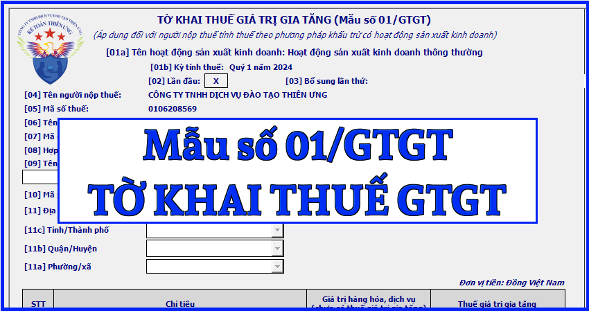

Mẫu tờ khai thuế giá trị gia tăng mới nhất năm 2024 là mẫu số: 01/GTGT được ban hành kèm theo Thông tư số 80/2021/TT-BTC. Đây là tờ khai thuế áp dụng đối với người nộp thuế tính thuế theo phương pháp khấu trừ có hoạt động sản xuất kinh doanh
|
CỘNG HÒA XÃ HỘI CHỦ NGHĨA VIỆT NAM
Độc lập - Tự do - Hạnh phúc
TỜ KHAI THUẾ GIÁ TRỊ GIA TĂNG
(Áp dụng đối với người nộp thuế tính thuế theo phương pháp khấu trừ có hoạt động sản xuất kinh doanh)
[01a] Tên hoạt động sản xuất kinh doanh: ......
[01b] Kỳ tính thuế: Tháng 09 năm 2026 /Quý III năm 2026
[05] Mã số thuế: [06] Tên đại lý thuế (nếu có):........................................................ [07] Mã số thuế: [08] Hợp đồng đại lý thuế: Số............................ngày....................... [09] Tên đơn vị phụ thuộc/địa điểm kinh doanh của hoạt động sản xuất kinh doanh khác tỉnh nơi đóng trụ sở chính: ……………. [10] Mã số thuế đơn vị phụ thuộc/Mã số địa điểm kinh doanh:………………… [11] Địa chỉ nơi có hoạt động sản xuất kinh doanh khác tỉnh nơi đóng trụ sở chính: [11a] Phường/xã………… [11b] Quận/Huyện …… [11c] Tỉnh/Thành phố………..
Đơn vị tiền: Đồng Việt Nam
Tôi cam đoan số liệu khai trên là đúng và chịu trách nhiệm trước pháp luật về số liệu đã khai./.
|
||||||||||||||||||||||||||||||||||||||||||||||||||||||||||||||||||||||||||||||||||||||||||||||||||||||||||||||||||||||||||||||||||||||||||||||||||||||||||||||||||||||||||||||||||||||||||||||||||||||||||||||||||||||||||||||||||||||||||||
Cách kê khai Tờ khai thuế giá trị gia tăng - mẫu số 01/GTGT theo TT 80/2021 như sau:
* Phần thông tin chung:
+ Chỉ tiêu [01a] - Tên hoạt động sản xuất kinh doanh: Người nộp thuế phải lựa chọn hoặc ghi một trong các hoạt động sau:
- Hoạt động sản xuất kinh doanh thông thường.
- Hoạt động xổ số kiến thiết, xổ số điện toán.
- Hoạt động thăm dò khai thác dầu khí.
- Dự án đầu tư cơ sở hạ tầng, nhà để chuyển nhượng khác địa bàn tỉnh nơi đóng trụ sở chính.
- Nhà máy sản xuất điện khác địa bàn tỉnh nơi đóng trụ sở chính.
Lưu ý:
- Chỉ tiêu này bắt buộc người nộp thuế phải khai và ghi đúng tên hoạt động sản xuất kinh doanh nêu trên. Trường hợp người nộp thuế không ghi tên hoạt động sản xuất kinh doanh trên tờ khai thì được hiểu là “Hoạt động sản xuất kinh doanh thông thường”. Người nộp thuế thực hiện khai điện tử, Hệ thống Etax hỗ trợ người nộp thuế lựa chọn một trong các trường hợp, không được bỏ trống.
- Trường hợp người nộp thuế có nhiều hoạt động sản xuất kinh doanh nêu trên thì lập nhiều tờ khai thuế, mỗi tờ khai, người nộp thuế lựa chọn một hoạt động sản xuất kinh doanh tương ứng với thông tin kê khai.
+ Chỉ tiêu [01b] - Kỳ tính thuế: Khai kỳ tính thuế là tháng phát sinh nghĩa vụ thuế. Trường hợp người nộp thuế được cơ quan thuế chấp thuận khai thuế theo quý hoặc người nộp thuế mới thành lập thì ghi kỳ tính thuế là quý phát sinh nghĩa vụ thuế.
+ Chỉ tiêu [02], [03]: Tích chọn “Lần đầu”. Trường hợp người nộp thuế phát hiện hồ sơ khai thuế lần đầu đã nộp cho cơ quan thuế có sai, sót thì kê khai bổ sung theo số thứ tự của từng lần bổ sung.
Lưu ý:
- Người nộp thuế thực hiện khai điện tử, Hệ thống Etax hỗ trợ người nộp thuế xác định Tờ khai thuế “Lần đầu” tương ứng với từng hoạt động sản xuất kinh doanh tại chỉ tiêu [01a] .
- Kể từ thời điểm Hệ thống Etax có Thông báo chấp nhận hồ sơ khai thuế đối với Tờ khai thuế “Lần đầu”, các Tờ khai thuế tiếp theo của cùng kỳ tính thuế, cùng hoạt động sản xuất kinh doanh là tờ khai “Bổ sung”. Người nộp thuế phải nộp Tờ khai “Bổ sung” theo quy định về khai bổ sung.
+ Chỉ tiêu [04], [05]: Khai thông tin “Tên người nộp thuế và mã số thuế” theo thông tin đăng ký doanh nghiệp hoặc đăng ký thuế của người nộp thuế.
Lưu ý: Đây là thông tin bắt buộc. Người nộp thuế khai thuế điện tử, sau khi điền đầy đủ, chính xác thông tin “Mã số thuế”, Hệ thống Etax tự động hỗ trợ hiển thị thông tin về “Tên người nộp thuế”.
+ Chỉ tiêu [06], [07], [08]: Trường hợp Đại ký thuế thực hiện khai thuế: Khai thông tin “Tên đại lý thuế, mã số thuế” “số, ngày của hợp đồng đại lý thuế”. Đại lý thuế phải có tình trạng đăng ký thuế “Đang hoạt động” và Hợp đồng phải đang còn hiệu lực tương ứng tại thời điểm khai thuế.
Lưu ý: Người nộp thuế khai thuế điện tử, Hệ thống Etax tự động hỗ trợ hiển thị thông tin về Đại lý thuế, Hợp đồng đại lý thuế đã đăng ký với cơ quan thuế để người nộp thuế lựa chọn trong trường hợp người nộp thuế có nhiều Đại lý thuế, Hợp đồng.
+ Chỉ tiêu [09], [10], [11]: Trường hợp NNT khai riêng thuế GTGT cho đơn vị phụ thuộc, địa điểm kinh doanh đóng tại địa phương khác tỉnh nơi đóng trụ sở chính đối với các trường hợp quy định tại điểm b, c khoản 1 Điều 11 Nghị định số 126/2020/NĐ-CP ngày 19/10/2020 của Chính phủ (trừ trường hợp đơn vị phụ thuộc trực tiếp khai thuế GTGT với cơ quan thuế trực tiếp quản lý đơn vị phụ thuộc).
Lưu ý:
- Trường hợp có nhiều đơn vị phụ thuộc, địa điểm kinh doanh đóng trên nhiều huyện do Cục Thuế quản lý thì chọn 1 đơn vị đại diện để kê khai vào chỉ tiêu này. Trường hợp có nhiều đơn vị phụ thuộc, địa điểm kinh doanh đóng trên nhiều huyện do Chi cục Thuế khu vực quản lý thì chọn 1 đơn vị đại diện cho huyện do Chi cục Thuế khu vực quản lý để kê khai vào chỉ tiêu này.
- Người nộp thuế khai thuế điện tử, Hệ thống Etax tự động hỗ trợ hiển thị thông tin về đơn vị phụ thuộc, địa điểm kinh doanh đã đăng ký thuế để người nộp thuế lựa chọn.
* Phần kê khai các chỉ tiêu của bảng:
A. Không phát sinh hoạt động mua, bán trong kỳ:
+ Chỉ tiêu [21]: Nếu trong kỳ tính thuế không phát sinh các hoạt động mua, bán thì người nộp thuế vẫn phải lập tờ khai và gửi đến cơ quan thuế (trừ trường hợp tạm ngừng hoạt động, kinh doanh). Trên tờ khai, người nộp thuế đánh dấu “X” vào chỉ tiêu số [21]. Người nộp thuế không được điền số 0 vào các chỉ tiêu phản ánh giá trị và thuế GTGT của hàng hóa, dịch vụ (HHDV) mua vào, bán ra trong kỳ.
B. Thuế GTGT còn được khấu trừ kỳ trước chuyển sang
+ Chỉ tiêu [22]: Số liệu ghi vào chỉ tiêu này là số thuế GTGT còn được khấu trừ chuyển kỳ sau tại chỉ tiêu số [43] của Tờ khai thuế GTGT mẫu số 01/GTGT kỳ tính thuế trước liền kề.
C. Kê khai thuế GTGT phải nộp ngân sách nhà nước:
I. Hàng hoá, dịch vụ mua vào trong kỳ:
1. Giá trị và thuế giá trị gia tăng của hàng hóa, dịch vụ mua vào: bao gồm các chỉ tiêu [23] và chỉ tiêu [24] phản ánh toàn bộ giá trị HHDV và tiền thuế GTGT của HHDV mà người nộp thuế mua vào trong kỳ.
+ Chỉ tiêu [23]: Số liệu ghi vào chỉ tiêu này là tổng số giá trị HHDV mua vào trong kỳ chưa có thuế GTGT (không bao gồm giá trị HHDV mua vào dùng cho dự án đầu tư đã kê khai vào tờ khai thuế GTGT dành cho dự án đầu tư mẫu số 02/GTGT) trên các hóa đơn, chứng từ, giấy nộp tiền vào NSNN, biên lai nộp thuế. Trường hợp người nộp thuế có TSCĐ, HHDV dùng chung cho sản xuất kinh doanh chịu thuế GTGT và không chịu thuế mà không hạch toán riêng được cho từng loại dùng cho HHDV chịu thuế GTGT hoặc không chịu thuế GTGT thì kê khai chung vào chỉ tiêu này.
- Trường hợp hoá đơn mua vào là loại hoá đơn, chứng từ đặc thù, giá mua đã bao gồm thuế GTGT như tem, vé cước vận tải,... thì căn cứ giá mua đã có thuế GTGT để tính ra doanh số mua chưa có thuế GTGT theo công thức:
- Giá mua chưa có thuế GTGT = Giá bán ghi trên hoá đơn/ (1 + thuế suất)
Người nộp thuế không được sử dụng hóa đơn, chứng từ không hợp pháp và sử dụng không hợp pháp hóa đơn, chứng từ theo quy định của pháp luật về hóa đơn để kê khai vào chỉ tiêu này.
+ Chỉ tiêu [24]: Số liệu ghi vào chỉ tiêu này là tổng thuế GTGT của TSCĐ, HHDV mua vào trên các hoá đơn, chứng từ, giấy nộp tiền vào NSNN, biên lai nộp thuế (không bao gồm thuế GTGT đầu vào dùng cho dự án đầu tư đã kê khai vào tờ khai thuế GTGT dành cho dự án đầu tư mẫu số 02/GTGT). Riêng các hoá đơn bất hợp pháp thì không được kê khai vào chỉ tiêu này.
+ Chỉ tiêu [23a], [24a]: Số liệu ghi vào chỉ tiêu này tương tự như cách kê khai chỉ tiêu chỉ tiêu [23], [24] nhưng chỉ kê khai riêng đối với giá trị mua vào và thuế GTGT mua vào của hàng hóa, dịch vụ nhập khẩu.
2. Thuế GTGT của hàng hóa, dịch vụ mua vào được khấu trừ kỳ này:
+ Chỉ tiêu [25]: Khai tổng số thuế GTGT mua vào đã kê khai tại chỉ tiêu [24] đủ điều kiện được khấu trừ theo quy định của pháp luật về thuế GTGT.
- Trường hợp người nộp thuế có TSCĐ, HHDV mua vào sử dụng đồng thời cho sản xuất, kinh doanh HHDV chịu thuế GTGT và không chịu thuế GTGT mà không hạch toán riêng được thuế GTGT mua vào được khấu trừ và không được khấu trừ thì người nộp thuế thực hiện phân bổ theo quy định của pháp luật về thuế GTGT để xác định riêng thuế GTGT mua vào được khấu trừ và kê khai vào chỉ tiêu này như sau:
- Thuế GTGT mua vào được khấu trừ = Doanh thu chịu thuế GTGT/ Tổng doanh thu x Thuế GTGT mua vào sử dụng đồng thời cho sản xuất, kinh doanh HHDV chịu thuế GTGT và không chịu thuế GTGT
II. Hàng hoá, dịch vụ bán ra trong kỳ
1. Hàng hóa, dịch vụ bán ra không chịu thuế giá trị gia tăng
+ Chỉ tiêu [26]: Số liệu ghi vào chỉ tiêu này là giá trị HHDV bán ra không chịu thuế giá trị gia tăng trên các hoá đơn GTGT bán ra của người nộp thuế trong kỳ tính thuế.
2. Hàng hóa, dịch vụ bán ra chịu thuế giá trị gia tăng:
+ Chỉ tiêu [27] - Giá trị HHDV bán ra chịu thuế giá trị gia tăng: được xác định theo công thức [27] = [29]+[30]+[32]+[32a].
+ Chỉ tiêu [28] - Thuế GTGT của HHDV bán ra chịu thuế giá trị gia tăng: được xác định theo công thức [28]=[31]+[33].
+ Chỉ tiêu [29] - Giá trị HHDV bán ra chịu thuế suất 0%: Số liệu để ghi vào chỉ tiêu này là giá trị HHDV bán ra có thuế suất giá trị gia tăng là 0% trên các hoá đơn GTGT bán ra của người nộp thuế trong kỳ tính thuế.
+ Chỉ tiêu [30] - Giá trị HHDV bán ra chịu thuế suất 5%: Số liệu để ghi vào chỉ tiêu này là giá trị HHDV bán ra có thuế suất giá trị gia tăng là 5% trên các hoá đơn GTGT bán ra của người nộp thuế trong kỳ tính thuế.
+ Chỉ tiêu [31] - Thuế GTGT của HHDV bán ra chịu thuế suất 5%: Số liệu để ghi vào chỉ tiêu này là thuế GTGT của HHDV bán ra có thuế suất giá trị gia tăng là 5% trên các hoá đơn GTGT bán ra của người nộp thuế trong kỳ tính thuế.
+ Chỉ tiêu [32] - Giá trị HHDV bán ra chịu thuế suất 10%: Số liệu để ghi vào chỉ tiêu này là giá trị HHDV bán ra có thuế suất giá trị gia tăng là 10% trên các hoá đơn GTGT bán ra của người nộp thuế trong kỳ tính thuế.
+ Chỉ tiêu [32a]: Số liệu để ghi vào chỉ tiêu này là giá trị HHDV thuộc trường hợp không phải kê khai, tính nộp thuế GTGT theo quy định của pháp luật thuế GTGT.
+ Chỉ tiêu [33] - Thuế GTGT của HHDV bán ra chịu thuế suất 10%: Số liệu để ghi vào chỉ tiêu này là thuế GTGT của HHDV bán ra có thuế suất giá trị gia tăng là 10% trên các hoá đơn GTGT bán ra của người nộp thuế trong kỳ tính thuế.
3. Tổng doanh thu và thuế GTGT của hàng hóa, dịch vụ bán ra
+ Chỉ tiêu [34] - Tổng doanh thu của hàng hóa, dịch vụ bán ra: được xác định theo công thức [34]=[26]+[27].
+ Chỉ tiêu [35] – Thuế GTGT của hàng hóa, dịch vụ bán ra: được xác định theo công thức [35]=[28].
III. Thuế giá trị gia tăng phát sinh trong kỳ
+ Chỉ tiêu [36] - Thuế giá trị gia tăng phát sinh trong kỳ: được xác định theo công thức [36]=[35]-[25].
IV. Điều chỉnh tăng, giảm thuế giá trị gia tăng còn được khấu trừ của các kỳ trước
+ Chỉ tiêu [37] và chỉ tiêu [38]: Số liệu để ghi vào chỉ tiêu này là số thuế được khấu trừ điều chỉnh tăng/giảm tại chỉ tiêu II trên Tờ khai bổ sung mẫu số 01/KHBS. Riêng trường hợp cơ quan thuế, cơ quan có thẩm quyền đã ban hành kết luận, quyết định xử lý về thuế có điều chỉnh tương ứng các kỳ tính thuế trước thì khai vào hồ sơ khai thuế của kỳ tính thuế nhận được kết luận, quyết định xử lý về thuế (không phải khai bổ sung hồ sơ khai thuế).
V. Thuế giá trị gia tăng nhận bàn giao được khấu trừ trong kỳ:
+ Chỉ tiêu [39a]: Số liệu để ghi vào chỉ tiêu này là số thuế GTGT còn được khấu trừ chưa đề nghị hoàn của dự án đầu tư chuyển cho người nộp thuế tiếp tục khấu trừ (là số thuế GTGT còn được khấu trừ, không đủ điều kiện hoàn, không hoàn mà người nộp thuế đã kê khai riêng tờ khai thuế dự án đầu tư) khi dự án đầu tư đi vào hoạt động hoặc số thuế GTGT còn được khấu trừ chưa đề nghị hoàn của hoạt động sản xuất kinh doanh của đơn vị phụ thuộc khi chấm dứt hoạt động,…
VI. Xác định nghĩa vụ thuế giá trị gia tăng phải nộp trong kỳ:
1. Thuế giá trị gia tăng phải nộp của hoạt động sản xuất kinh doanh trong kỳ:
+ Chỉ tiêu [40a] - Thuế giá trị gia tăng phải nộp của hoạt động sản xuất kinh doanh trong kỳ: được xác định theo công thức [40a]=([36]-[22]+[37]-[38]-[39a]) ≥ 0.
+ Chỉ tiêu [40b] - Thuế giá trị gia tăng mua vào của dự án đầu tư được bù trừ với thuế GTGT còn phải nộp của hoạt động sản xuất kinh doanh cùng kỳ tính thuế: Số liệu để ghi vào chỉ tiêu này là tổng số thuế GTGT đã khai tại chỉ tiêu [28a] và [28b] của các Tờ khai thuế GTGT mẫu số 02/GTGT của cùng kỳ tính thuế với tờ khai này.
+ Chỉ tiêu [40] - Thuế giá trị gia tăng còn phải nộp trong kỳ: được xác định theo công thức [40]=[40a]-[40b].
+ Chỉ tiêu [41] - Thuế giá trị gia tăng chưa khấu trừ hết kỳ này: được xác định theo công thức [41]=([36]-[22]+[37]-[38]-[39a]) ≤ 0.
+ Chỉ tiêu [42] - Thuế giá trị gia tăng đề nghị hoàn: Số liệu để ghi vào chỉ tiêu này là số thuế GTGT thuộc trường hợp được hoàn thuế theo quy định của pháp luật về thuế GTGT và pháp luật về quản lý thuế. Số liệu tại chỉ tiêu [42] phải nhỏ hơn hoặc bằng số liệu tại chỉ tiêu [41].
+ Chỉ tiêu [43] - Thuế giá trị gia tăng còn được khấu trừ chuyển kỳ sau: được xác định theo công thức [43]=[41]-[42].
* Phần ký tên, đóng dấu:
Người đại diện theo pháp luật của NNT hoặc người đại diện hợp pháp của người nộp thuế ký tên, đóng dấu hoặc ký điện tử để nộp tờ khai đến cơ quan thuế và chịu trách nhiệm trước pháp luật về số liệu đã khai. Trường hợp đại lý thuế khai thay cho người nộp thuế thì người đại diện theo pháp luật của đại lý thuế ký tên, đóng dấu hoặc ký điện tử thay cho NNT và ghi thêm thông tin họ và tên nhân viên đại lý thuế trực tiếp thực hiện khai thuế và số chứng chỉ hành nghề của nhân viên này vào thông tin tương ứng.
Kế Toán Diệu Tâm mời các bạn tham khảo chi tiết:

=======================
Các bạn muốn thành thạo các kỹ năng kê khai làm báo cáo thuế, xử lý hóa đơn chứng từ, xử lý doanh thu - chi phí, cân đối lãi lỗ của doanh nghiệp thì các bạn thể tham gia Khóa Học Thực Hành Kế Toán Thuế tại Công ty đào tạo Kế Toán Diệu Tâm
Chi tiết về khóa học các bạn xem tại đây nhé:
Học kế toán Thuế thực hành theo công việc thực tế
Học kế toán Thuế thực hành theo công việc thực tế
===================================================